On the use of a local R-hat to improve MCMC convergence diagnostic
Théo Moins, Julyan Arbel, Stéphane Girard, Anne Dutfoy
library("EnvStats")
library('jmuOutlier')
library("ggplot2")
library("rstan")
devtools::load_all()
source(paste(r_folder, "import/monitornew.R", sep=""))
source(paste(r_folder, "import/r_star_monitor.R", sep=""))
reps <- 500This notebook is a supplementary material of the paper “On the use of a local \(\hat{R}\) to improve MCMC convergence diagnostic” (link). It illustrates the use of a localized version of the Gelman–Rubin diagnostic (commonly named \(\hat{R}\)) on various examples. This local version \(\hat{R}(x)\) has a population counterpart which can be written \[\begin{equation} \label{eq:R_theorique} R(x) = \sqrt{\frac{W(x)+B(x)}{W(x)}} = \sqrt{1 + \frac{\sum_{j=1}^m\sum_{k=j+1}^m \left(F_j(x)-F_k(x)\right)^2}{m\sum_{j=1}^m F_j(x)(1-F_j(x))}}. \end{equation}\] In addition to the \(\hat{R}(x)\) curves, we suggest to use \(R_\infty = \sup_{x \in\mathbb{R}} R(x)\) as a scalar summary.
This notebook includes most of the examples used in the article plus others, showing how the figures were generated. Section 1 concerns some toy examples (Section 2.5 in the paper), Section 2 the multivariate extension (Section 3 in the paper), and Section 3 the applications to Bayesian inference (Section 4 in the paper).
For reproducibility, the code that is used and the corresponding markdown file is also available online (https://github.com/TheoMoins/localrhat).
1 Known distributions on the chains
1.1 Threshold estimation
We start by illustrate the choice of threshold for \(\hat{R}_\infty\) depending on the number of chains. We focus on the case where all the distributions are the same, to verify the behavior in the null hypothesis, and estimate the type I error at \(5\%\). This value will be used as a threshold to determine whether or not the chains follows the same distribution (i.e. convergence is reached). For each example we keep a constant number of i.i.d samples (\(nm=400\))
For \(m=2\), \(1.01\) seems to be an adapted threshold:
sigma <- 1
alpha <- 0.8
eta <- 1
M <- 2
N <- 200
uniform_rdists <- c((function(n) runif(n, -sigma, sigma)),
(function(n) runif(n, -sigma, sigma)))
pareto_rdists <- c((function(n) rpareto(n, location = eta, shape = alpha)),
(function(n) rpareto(n, location = eta, shape = alpha)))
colors_same <- c(rgb(0.55, 0, 0.4, 0.8), rgb(0.4, 0, 0.7, 0.8), rgb(0.5, 0, 0.5, 0.9))
R_matrix_same_unif <- repetitions_R(chains_func = (function() gen_chains(M, N, uniform_rdists)),
r_func = c(rhat_infinity),
r_names = c("Uniform"),
reps = reps)
R_matrix_same_par <- repetitions_R(chains_func = (function() gen_chains(M, N, pareto_rdists)),
r_func = c(rhat_infinity),
r_names = c("Pareto"),
reps = reps)
R_matrix_same_unif_par <- cbind(R_matrix_same_unif, R_matrix_same_par)
xlabels = c(1, 1.01, 1.02, 1.03, 1.04)
plot_hist(R_matrix_same_unif_par, colors = colors_same, plot_threshold = F,
threshold = 1.01001, xlabels = xlabels, bin_size = 0.0020,
lim_y_axis = 200, vaxis_pos = 0.9985, plot_legend = F)
For \(m=4\), \(1.01\) may be too strong and \(1.02\) seems more reasonable:
M <- 4
N <- 100
R_matrix_same_unif <- repetitions_R(chains_func = (function() gen_chains(M, N, uniform_rdists)),
r_func = c(rhat_infinity),
r_names = c("Uniform"),
reps = reps)
R_matrix_same_par <- repetitions_R(chains_func = (function() gen_chains(M, N, pareto_rdists)),
r_func = c(rhat_infinity),
r_names = c("Pareto"),
reps = reps)
R_matrix_same_unif_par <- cbind(R_matrix_same_unif, R_matrix_same_par)
xlabels = c(1, 1.01, 1.02, 1.03, 1.04)
plot_hist(R_matrix_same_unif_par, colors = colors_same, plot_threshold = F,
xlabels = xlabels, bin_size = 0.002, threshold = 1.02,
lim_y_axis = 200, vaxis_pos = 0.9985, plot_legend = F)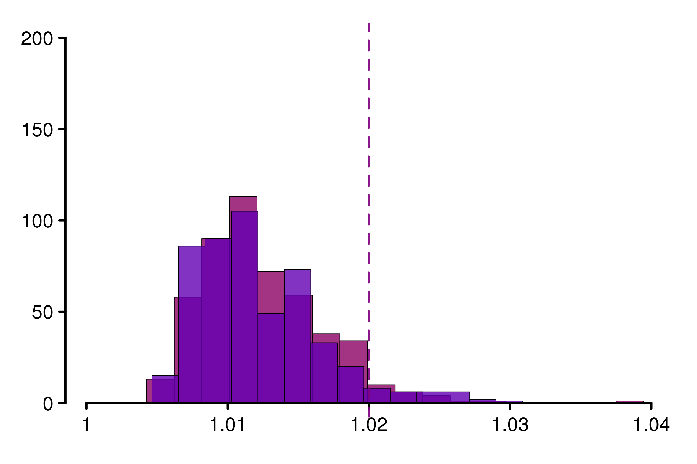
This increases persists as the number of chains increase, typically \(1.03\) should be considered when \(m=8\):
M <- 8
N <- 50
R_matrix_same_unif <- repetitions_R(chains_func = (function() gen_chains(M, N, uniform_rdists)),
r_func = c(rhat_infinity),
r_names = c("Uniform"),
reps = reps)
R_matrix_same_par <- repetitions_R(chains_func = (function() gen_chains(M, N, pareto_rdists)),
r_func = c(rhat_infinity),
r_names = c("Pareto"),
reps = reps)
R_matrix_same_unif_par <- cbind(R_matrix_same_unif, R_matrix_same_par)
xlabels = c(1, 1.01, 1.02, 1.03, 1.04)
plot_hist(R_matrix_same_unif_par, colors = colors_same, plot_threshold = F,
threshold = 1.03, xlabels = xlabels, bin_size = 0.002,
lim_y_axis = 200, vaxis_pos = 0.9985)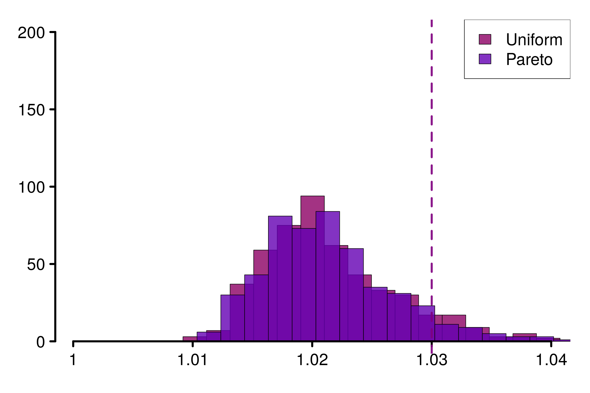
1.2 Counter examples for \(\hat{R}\)
Then, we consider two cases where \(\hat{R}\) is not able to detect a convergence failure, and a then some examples where the improvement rank-\(\hat{R}\) also fails.
1.2.1 Chains with same mean and different variances: Uniform distribution
As a first example we consider \(m\) chains following centered uniform distributions, with the last having a different support than the other: \[\begin{align*} F_1(x) &= \cdots = F_{m-1}(x) = \frac{x}{2\sigma} + \frac{1}{2}, \quad \forall x \in \left[-\sigma; \sigma\right],\\ \text{and}\quad F_m(x) &= \frac{x}{2\sigma_m} + \frac{1}{2}, \quad \forall x \in \left[-\sigma_m; \sigma_m\right]. \end{align*}\]
In such a case the expression of \(R(x)\) is explicit (see Example 1 in Section 2.5) and can be compared to the estimator \(\hat{R}(x)\). To illustrate we choose \(m=4\) chains, \(\sigma = 3/4\) and \(\sigma_m = 1\):
sigma <- 3/4
sigmaM <- 1
M <- 4
N <- 200
uniform_dists <- c(rep(c((function(q) punif(q, -sigma, sigma))), M-1),
(function(q) punif(q, -sigmaM, sigmaM)))
theoretical_r_values <- r_dist_values(npoints = N, xlim = c(-sigmaM, sigmaM),
dists = uniform_dists)
uniform_rdists <- c((function(n) runif(n, -sigma, sigma)),
(function(n) runif(n, -sigmaM, sigmaM)))
chains = gen_chains(M, N, uniform_rdists)
rhat_infinity(chains, verbose = T)Threshold at confidence level 5%: 1.0195
Local R-hat obtained: 1.0715
p-value: < 0.001
WARNING: A convergence issue has been diagnosed[1] 1.071543simulated_rhat = all_local_rhat(chains, max_nb_points = "ALL")
xlabels <- c(1, 1.02, 1.04, 1.06, 1.08)
plot_local_r(chains, simulated_rhat, theoretical_r_values, col=c(colors[3], colors[2]),
xlabels = xlabels, plot_legend = FALSE,
xlim = c(-1,1), ylim=c(1,1.09), title ="")
We can see that \(\hat{R}(x)\) (in violet) neither overestimate nor underestimate \(R(x)\), which makes it reasonable to estimate the population value.
We replicate the experiment 500 times and study the histogram of replications of different versions of \(\hat{R}\):
r_functions <- c(trad_rhat, rhat, rhat_infinity)
r_names <- c("R-hat",
"Rank-R-hat",
"R-hat-infinity")
r_colors <- c(colors[4], colors[5], colors[3])
R_matrix_unif <- repetitions_R(chains_func = (function() gen_chains(M, N, uniform_rdists)),
r_func = r_functions,
r_names = r_names,
reps = reps)
xlabels <- c(1, 1.02, 1.04, 1.06, 1.08, 1.1)
plot_hist(R_matrix_unif, colors = r_colors, xlabels = xlabels,
bin_size = 0.005, lim_y_axis = reps, plot_legend = F)As constructed initially by Vehtari et al. (2021), this example fool the original \(\hat{R}\). The rank version as well as \(\hat{R}_\infty\) is on the contrary robust in this case.
1.2.2 Chains with heavy-tails and different locations: Pareto distribution
Similarly, we check the second counter-example that fool the original \(\hat{R}\): chains with heavy-tails and different locations. To do so we consider Pareto distributions on the chains: \[\begin{align*} F_1(x) &= \cdots = F_{m-1}(x) = 1 - \left({x}/{\eta}\right)^{-\alpha}, \quad \forall x \in [\eta, +\infty),\\ \text{and}\quad F_m(x) &= 1 - \left({x}/{\eta_m}\right)^{-\alpha}, \quad \forall x \in [\eta_m, +\infty). \end{align*}\]
As an example, we choose \(\alpha = 0.8 \leq 1\) to ensure infinite moments and \((\eta, \eta_m) = (1, 1.5)\):
eta <- 1
etaM <- 1.5
alpha <- 0.8
M <- 4
pareto_dists <- c(rep(c((function(q) ppareto(q, location = eta, shape = alpha))), M-1),
(function(q) ppareto(q, location = etaM, shape = alpha)))
theoretical_r_values <- r_dist_values(npoints = 1000, xlim = c(-eta, eta*8),
dists = pareto_dists)
pareto_rdists <- c((function(n) rpareto(n, location = eta, shape = alpha)),
(function(n) rpareto(n, location = etaM, shape = alpha)))
xlabels <- c(1, 1.02, 1.04, 1.06, 1.08)
chains <- gen_chains(M, N, pareto_rdists)
rhat_infinity(chains, verbose = T)Threshold at confidence level 5%: 1.0195
Local R-hat obtained: 1.0408
p-value: < 0.001
WARNING: A convergence issue has been diagnosed[1] 1.040772simulated_rhat <- all_local_rhat(chains, max_nb_points = "ALL")
plot_local_r(chains, simulated_rhat, theoretical_r_values,
plot_legend = FALSE, col=c(colors[3], colors[2]),
xlabels = xlabels, xlim = c(1,8), ylim=c(1,1.09), title ="")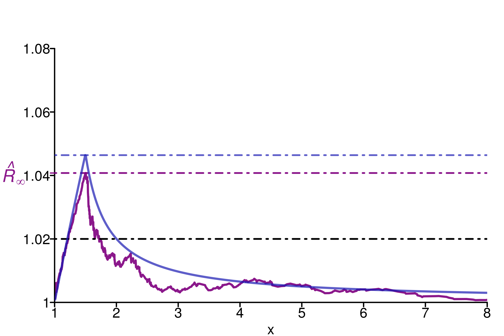
The same observations as for the previous example can be done here: \(\hat{R}_\infty\) is a reasonable quantity to estimate \(R_\infty\). We can verify the behavior on replications:
r_functions <- c(trad_rhat, rhat, rhat_infinity)
r_names <- c("R-hat", "Rank-R-hat", "R-hat-infinity")
r_colors <- c(colors[4], colors[5], colors[3])
R_matrix_pareto <- repetitions_R(chains_func = (function() gen_chains(M, N, pareto_rdists)),
r_func = r_functions,
r_names = r_names,
reps = reps)
xlabels = c(1, 1.02, 1.04, 1.06, 1.08)
plot_hist(R_matrix_pareto, colors = r_colors, xlabels = xlabels,
plot_legend = FALSE, bin_size = 0.005, lim_y_axis = 500)1.3 Counter examples for rank-\(\hat{R}\)
In this part, We will see 3 cases where rank-\(\hat{R}\) doesn’t manage to detect the convergence issue. These cases correspond to chains with different type of distributions, but with same mean and mean over the median. See Appendix A for details about the construction of such examples.
1.3.1 Uniform and Laplace distributions
We start by an example where the population version can be computed explicitly: if one chain is uniformly distributed \(\mathcal{U}(-2\sigma, 2\sigma)\) and another one from a Laplace distribution \(\mathcal{L}(0, \sigma)\), where \(\sigma>0\), then calculations leads to \(R_\infty \approx 1.018\), which means convergence issue.
sigma <- 1/4
M <- 2
dists <- c((function(q) punif(q, -2*sigma, 2*sigma)),
(function(q) plaplace(q, mean = 0, sd = sqrt(2)*sigma)))
theoretical_r_values <- r_dist_values(npoints = 1000, xlim = c(-1.5, 1.5),
dists = dists)
rdists <- c((function(n) runif(n, -2*sigma, 2*sigma)),
(function(n) rlaplace(n, mean = 0, sd = sqrt(2)*sigma)))
chains <- gen_chains(M, N, rdists)
rhat_infinity(chains, verbose = T)Threshold at confidence level 5%: 1.0125
Local R-hat obtained: 1.0186
p-value: 0.003
WARNING: A convergence issue has been diagnosed[1] 1.018643simulated_rhat <- all_local_rhat(chains, max_nb_points = "ALL")
xlabels <- c(1, 1.01, 1.02, 1.03)
plot_local_r(chains, simulated_rhat, theoretical_r_values, threshold = 1.01,
xlabels = xlabels, col = c(colors[3], colors[2]),
xlim = c(-1.5,1.5), ylim=c(1,1.03), title ="")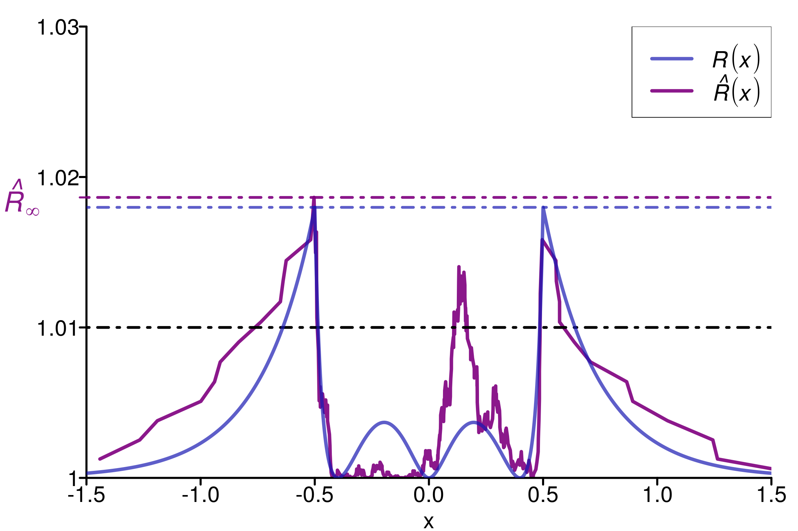
Replications show that rank-\(\hat{R}\) is fooled in the same way as \(\hat{R}\) in this example:
r_functions <- c(trad_rhat, rhat, rhat_infinity)
r_names <- c("R-hat", "Rank-R-hat", "R-hat-infinity")
r_colors <- c(colors[4], colors[5], colors[3])
R_matrix_lapl_unif <- repetitions_R(chains_func = (function() gen_chains(M, N, rdists)),
r_func = r_functions,
r_names = r_names,
reps = reps)
xlabels = c(1, 1.01, 1.02, 1.03, 1.04)
plot_hist(R_matrix_lapl_unif, colors = r_colors, bin_size = 0.003,
xlabels = xlabels, plot_legend = TRUE, threshold = 1.01,
lim_y_axis = reps, vaxis_pos = 0.9985)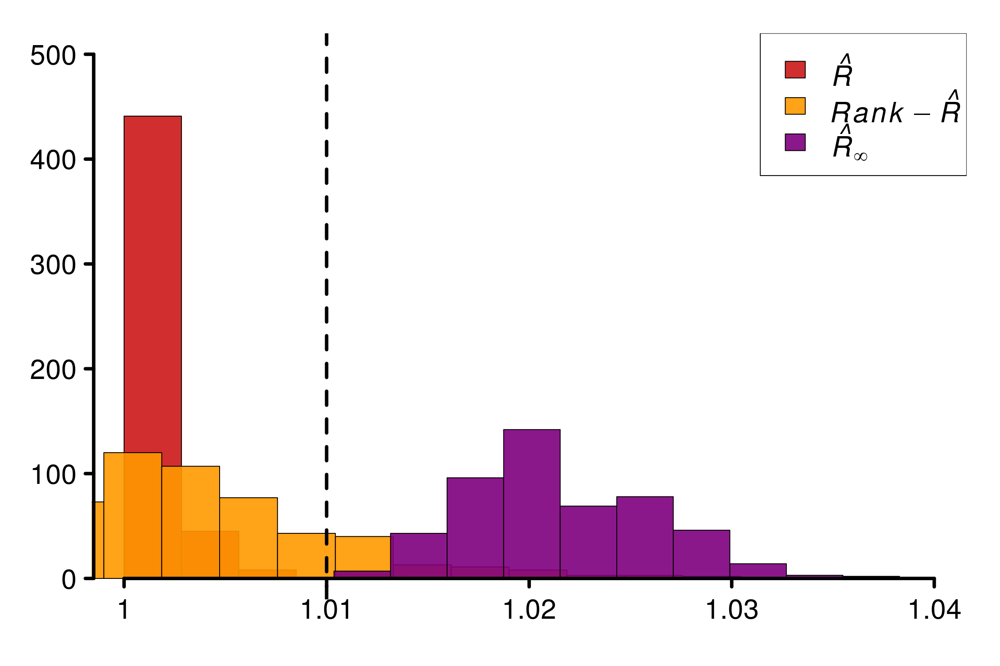
1.3.2 Uniform and Normal distributions
Similarly, others distributions are possible to build counter-examples. Consider \(m-1\) normal chains \(\mathcal{N}\left(0, \frac{\pi}{2}\sigma^2\right)\) and for the last one a uniform \(\mathcal{U}(-2\sigma, 2\sigma)\):
sigma <- 1/2
M <- 2
dists <- c((function(q) pnorm(q, mean = 0, sd = sqrt(0.5*pi)*sigma)),
(function(q) punif(q, -2*sigma, 2*sigma)))
theoretical_r_values <- r_dist_values(npoints = 1000, xlim = c(-2, 2),
dists = dists)
rdists <- c((function(n) rnorm(n, mean = 0, sd = sqrt(0.5*pi)*sigma)),
(function(n) runif(n, -2*sigma, 2*sigma)))
chains <- gen_chains(M, 2*N, rdists)
rhat_infinity(chains, verbose = T)Threshold at confidence level 5%: 1.0125
Local R-hat obtained: 1.0172
p-value: 0.00700000000000001
WARNING: A convergence issue has been diagnosed[1] 1.017231simulated_rhat <- all_local_rhat(chains, max_nb_points = "ALL")
xlabels <- c(1, 1.005, 1.01, 1.015, 1.02)
plot_local_r(chains, simulated_rhat, theoretical_r_values,
xlabels = xlabels, col=c(colors[3], colors[2]), threshold = 1.01,
xlim = c(-2,2), ylim=c(0.999,1.028), title ="Gaussian/Uniform distributions")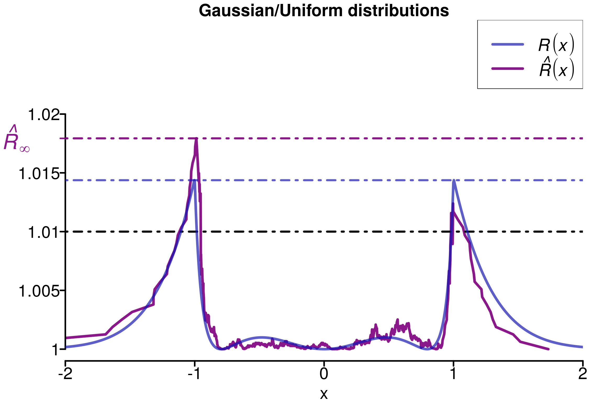
Replications confirms that this construction are fooling the different versions of \(\hat{R}\) except \(\hat{R}_\infty\):
r_functions <- c(trad_rhat, rhat, rhat_infinity)
r_names <- c("R-hat", "Rank-R-hat", "R-hat-infinity")
r_colors <- c(colors[4], colors[5], colors[3])
R_matrix_norm_unif <- repetitions_R(chains_func = (function() gen_chains(M, N, rdists)),
r_func = r_functions,
r_names = r_names,
reps = reps)
xlabels = c(1, 1.01, 1.02, 1.03)
plot_hist(R_matrix_norm_unif, colors = r_colors, xlabels = xlabels,
bin_size = 0.002, plot_legend = TRUE, threshold = 1.01,
lim_y_axis = reps, vaxis_pos = 0.999)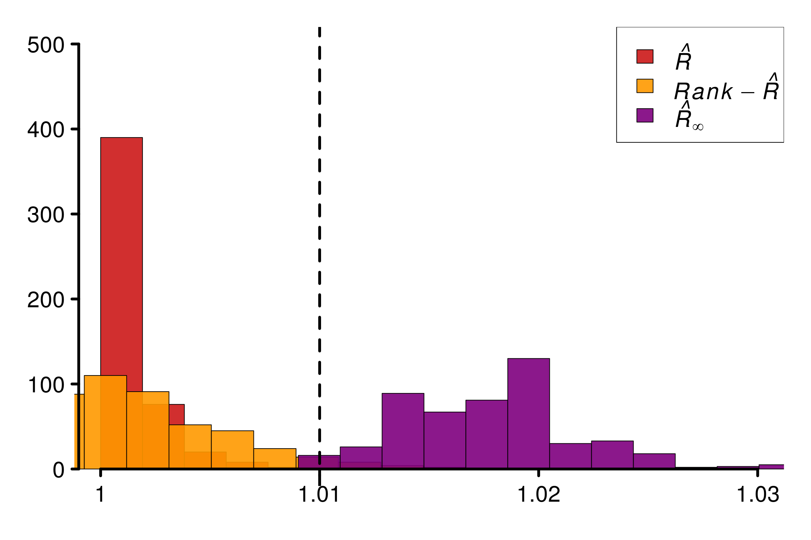
1.3.3 Uniform and Exponential distributions
Finally, it is also possible to mix uniform distributions with exponential to build a counter-example for rank-\(\hat{R}\):
M <- 4
N <- 200
min_unif <- 1-2*log(2)
max_unif <- 1+2*log(2)
dists <- c(rep(c((function(q) pexp(q))), M-1),
(function(q) punif(q, min_unif, max_unif)))
theoretical_r_values <- r_dist_values(npoints = 500, xlim = c(-1, 6),
dists = dists)
rdists <- c((function(n) rexp(n)),
(function(n) runif(n, min_unif, max_unif)))
chains <- gen_chains(M, N, rdists)
rhat_infinity(chains, verbose = T)Threshold at confidence level 5%: 1.0195
Local R-hat obtained: 1.0617
p-value: < 0.001
WARNING: A convergence issue has been diagnosed[1] 1.061693simulated_rhat <- all_local_rhat(chains, max_nb_points = "ALL")
xlabels <- c(1, 1.02, 1.04, 1.06, 1.08)
plot_local_r(chains, simulated_rhat, theoretical_r_values,
xlabels = xlabels, col = c(colors[3], colors[2]),
xlim = c(-1, 6), ylim=c(1,1.09), title ="")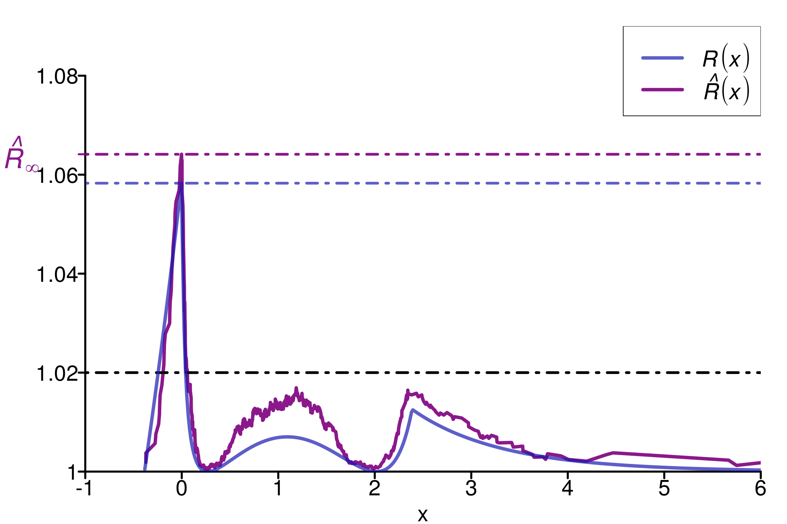
r_functions <- c(trad_rhat, rhat, rhat_infinity)
r_names <- c("R-hat", "Rank-R-hat", "R-hat-infinity")
r_colors <- c(colors[4], colors[5], colors[3])
R_matrix_exp_unif <- repetitions_R(chains_func = (function() gen_chains(M, N, rdists)),
r_func = r_functions,
r_names = r_names,
reps = reps)
plot_hist(R_matrix_exp_unif, colors = r_colors, bin_size = 0.007,
lim_y_axis = 500, vaxis_pos = 0.997)1.4 Summary
The following boxplot summarizes the values of replicated \(\hat{R}\), rank-\(\hat{R}\) and \(\hat{R}_\infty\) on the different examples:
data=data.frame(r_version, r_experiment, r_values)
ggplot(data, aes(x=r_experiment, y=r_values, fill=r_version)) +
geom_boxplot() +
geom_hline(yintercept=1.01, linetype="dashed",
color = "black", size=0.5) +
geom_hline(yintercept=1.02, linetype="dashed",
color = "green", size=0.5) +
xlab("Experiments") + ylab("Values")2 Multivariate examples
In the multivariate case when \(\boldsymbol{\theta}=(\theta_1, \ldots, \theta_d)\in{\mathbb R}^d\), we suggest to apply \(\hat{R}\) on a multivariate indicator variable \(I_{\boldsymbol{x}}^{(j)} = \mathbb{I}\{\theta_1^{(j)} \leq x_1, \ldots, \theta_d^{(j)} \leq x_d\}\) for any \(\boldsymbol{x} = (x_1, \ldots, x_d) \in \mathbb{R}^d\) in two steps:
1. Compute the univariate $\hat{R}_{\infty,p}$ separately on each of the
coordinates $p\in\{1,\dots,d\}$.
2. If $\hat{R}_{\infty,p} < 1.03$ for all $p\in\{1,\dots,d\}$, then all
margins are deemed to have converged and to be identically distributed.
Compute the multivariate $\hat{R}^{(\text{max})}_\infty$ to check the convergence of the
dependence structure in all dependence directions. If the number of dimension is too high,
compute a univarite $\hat{R}$ on the log-posterior.Thus we recommend to compute the multivariate version only in the case where all the univariate one doesn’t detect any convergence issue, this is why in the part we will focus only of cases where the margins are the same (for example uniform).
Additional experiments on different copulas using Open TURNS can be found here: (https://theomoins.github.io/localrhat/Simulations_ot.html)
library("MASS") # For Multivariate Normal Distribution
library("stableGR") # For the R-hat version of Vats and Knudson (2018)
library("coda") # For an implementation of the multivariate R-hat of Brooks and Gelman (1998)
library("rWishart") # Wishart distribution
library("mcmc") # for logit data
library("ggridges")
brooks_multivariate_rhat <- function(chaines){
R_star_chains = aperm(chaines, c(1, 3, 2))
return (r_hat_multivariate(R_star_chains, split_chains = F))
}
coda_multivariate_rhat <- function(chaines){
chaines_list = list()
for (i in 1:dim(chaines)[3]){
mcmc_ch <- as.mcmc(chaines[,,i])
chaines_list[[i]] <- as.mcmc(chaines[,,i])
}
mcmc_chains = do.call(mcmc.list, list(chaines_list))
return (gelman.diag(mcmc_chains)$mpsrf)
}2.1 Bivariate Case: Normal distributions
In this section, we focus on two-dimensional parameters on which we aim at diagnose convergence of the corresponding MCMC (with any number of chains). This restriction allows to navigate easily between the positive dependence and the negative one of the two components.
In particular, we consider bivariate normal densities with zero means, and compare \(m-1\) chains with identity covariance matrix, and one with non-zero off-diagonal elements \(\rho \in (-1,1)\).
We start by defining the function that will allows us to generate \(m\) chains of size \(n\) with this configuration :
gen_bvnormal_chains <- function(M, N, rho){
sig_matrix <- (1-rho) * diag(2) + matrix(rho, nrow=2, ncol=2)
return (array(c(mvrnorm((M-1)*N, mu = rep(0, 2), Sigma = diag(2)),
mvrnorm(N, mu = rep(0, 2), Sigma = sig_matrix)), c(N,2,M)))
}As an example, we consider the case with \(m=2\) chains of size \(n=200\), and \(\rho = 0.9\) on the last chain. This choice of \(n\) relatively small is due to the fact the elements in the chain are i.i.d here, so \(n\) can be seen as an effective sample size for a given chain here.
rho <- 0.9
M <- 2
N <- 200
chains <- gen_bvnormal_chains(M, N, rho)
rhat_infinity(chains, verbose = T)Threshold at confidence level 5%: 1.0125
Local R-hat obtained: 1.0163
p-value: 0.01
WARNING: A convergence issue has been diagnosed[1] 1.016343We simulate 100 experiments, which result as 100 draws of the different \(\hat{R}\).
Histogram of the corresponding values of \(\hat{R}_\infty\) and the multivariate \(\hat{R}\) of Brooks and Gelman (1998) :
rho <- 0.9
M <- 2
N <- 200
reps <- 100
r_functions = c(brooks_multivariate_rhat, rhat_infinity)
r_names = c("Brooks Multivariate R-hat", "R-hat-infinity")
r_colors = c(colors[4], colors[3])
R_matrix = repetitions_R(chains_func = (function() gen_bvnormal_chains(M, N, rho)),
r_func = r_functions,
r_names = r_names,
reps = reps)
xlabels = c(1, 1.02, 1.04, 1.06, 1.08, 1.1, 1.12)
plot_hist(R_matrix, colors = r_colors, bin_size = 0.0045,
lim_y_axis = 30, vaxis_pos = 0.995,
xlabels = xlabels, plot_threshold = F)2.1.1 Evolution of the different value of \(\hat{R}\) with \(\rho\)
We consider the mean of 10 draws for the different versions of \(\hat{R}\), and plot the evolution of this value with \(\rho\):
rho_list = c(-0.99, -0.9, -0.7, -0.5, -0.2, 0, 0.2, 0.5, 0.7, 0.9, 0.99)
d <- 2
M <- 2
N <- 500
reps <- 10
r_functions <- c(rhat_infinity, brooks_multivariate_rhat)
r_names <- c("R-hat-infinity", "Brooks R-hat")
R_values <- c()
x_val <- c()
theoretical_R <- c()
for (rho in rho_list){
R_val_rho = repetitions_R(chains_func = (function() gen_bvnormal_chains(M, N, rho)),
r_func = r_functions,
r_names = r_names,
reps = reps)
R_values = rbind(R_values, R_val_rho)
x_val = c(x_val, rep(rho, reps))
sig_matrix <- (1-rho) * diag(2) + matrix(rho, nrow=2, ncol=2)
dists <- c((function(q) mvtnorm::pmvnorm(upper = q, sigma = diag(2))[1]),
(function(q) mvtnorm::pmvnorm(upper = q, sigma = sig_matrix)[1]))
theoretical_R = c(theoretical_R, max_r_dist_bivariate(npoints = 200,
xlim = c(-3,3),
dists = dists))
}
par(mar=c(4,5.5,2,2))
plot(x=x_val, y=R_values[,1],
col = c(colors[3]), pch = 19,
xlab = expression(rho["m"]), ylab = "",
xaxs="i", yaxs="i", bty = "n",
xaxt = "n", yaxt = "n",
cex.lab = 2, cex.main = 2,
lwd=9,
xlim = c(-1.01, 1.02), ylim = c(0.999,1.105))
points(x=x_val, y=R_values[,2],
col = c(colors[4]), pch = 19,
lwd=9)
lines(rho_list, theoretical_R, type="l", col = colors[2], lwd=6, lty = 2)
points(x=rho_list, y=theoretical_R,
col = c(colors[2]), pch = 19,
lwd=9)
xlabels = c(1, 1.02, 1.04, 1.06, 1.08, 1.1)
ylabels = c(-1, -0.5, 0, 0.5, 1)
axis(1, labels=ylabels, at=ylabels, cex.axis=2, lwd=3, mgp = c(1,1,0))
axis(2, labels=xlabels, at=xlabels, cex.axis=2, mgp = c(1,0.5,0), lwd=2)
legend(x=0.6, y=1.14, col=c(colors[4], colors[3], colors[2]), pch=19,
legend = c(expression(italic(hat(R))),
expression(italic(hat(R)[infinity])),
expression(italic(R[infinity]))), cex=2)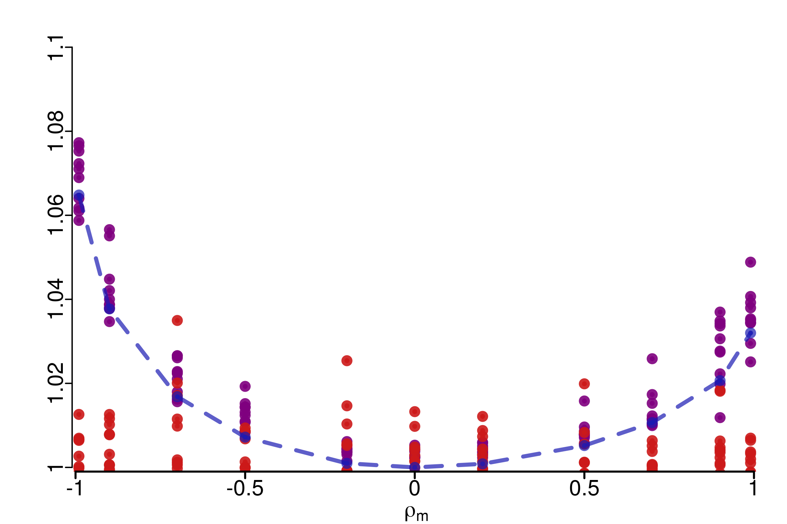
Two remarks can be done here:
1. First, $\hat{R}_\infty$ seems to be more sensitive to the difference in the
copula, and this phenomenon increases with $|\rho|$ which was expected.
2. The asymmetry can be link to the theoretical computations.
WARNING: The case $d=2$ is special: the orders on the two bounds PLOD and NLOD are
inverted compared to the asymptotic behavior, and that is why here we are
more sensitive when $\rho < 0$ than when $\rho >0$.2.2 General number of dimensions
2.2.1 Generation of a covariance matrix
In the general case, we still compare \(m-1\) chains that follows a multivariate normal distribution with identity covariance matrix with one that has a given covariance matrix \(\Sigma\).
We generate \(\Sigma\) from a sample of a Wishart distribtution \(S\), and in order to keep the same margins for our chains, we transform \(S\) to have ones on the diagonal : \[ \Sigma = D^{-1/2} S D^{-1/2}, \quad \text{ with } \quad D = \text{Diag}\left(s_{1,1}, \ldots, s_{d,d}\right) \]
From the theoretical part, we know that the value given by \(\hat{R}_\infty\) depends on the direction of dependence. Thus, we can either fix \(\Sigma\) and study the behaviour of the different \(\hat{R}\), or sample a new \(\Sigma\) for each draw of \(\hat{R}\).
generate_sigma_matrix <- function(d){
S <- rWishart(1, d, diag(d))[,,1]
S <- diag(1/sqrt(diag(S))) %*% S %*% diag(1/sqrt(diag(S)))
return (S)
}
gen_mvnormal_chains <- function(M, N, d, S=NULL){
if (is.null(S)){
S <- generate_sigma_matrix(d)
}
return (array(c(mvrnorm((M-1)*N, mu = rep(0, d), Sigma = diag(d)),
mvrnorm(N, mu = rep(0, d), Sigma = S)),
c(N,d,M)))
}First, we start by considering \(d=5\) and study the behavior of \(\hat{R}_\infty\) and the multivariate \(\hat{R}\) of Brooks and Gelman (1998) on a given \(\Sigma\) for the last chain:
d <- 5
M <- 4
N <- 100
reps <- 100
r_functions <- c(brooks_multivariate_rhat, rhat_infinity)
r_names <- c("Brooks Multivariate R-hat", "R-hat-infinity")
r_colors <- c(colors[3], colors[4])
S <- generate_sigma_matrix(d)
print(S) [,1] [,2] [,3] [,4] [,5]
[1,] 1.0000000 0.3528609 0.7434603 0.1491803 -0.1380975
[2,] 0.3528609 1.0000000 0.4345097 0.8059773 0.5687374
[3,] 0.7434603 0.4345097 1.0000000 0.1837495 -0.2814009
[4,] 0.1491803 0.8059773 0.1837495 1.0000000 0.2456532
[5,] -0.1380975 0.5687374 -0.2814009 0.2456532 1.0000000R_matrix <- repetitions_R(chains_func = (function() gen_mvnormal_chains(M, N, d, S)),
r_func = r_functions,
r_names = r_names,
reps = reps)
plot_hist(R_matrix, colors = r_colors, bin_size = 0.002,
lim_y_axis = 25, vaxis_pos = 1,
plot_threshold = F)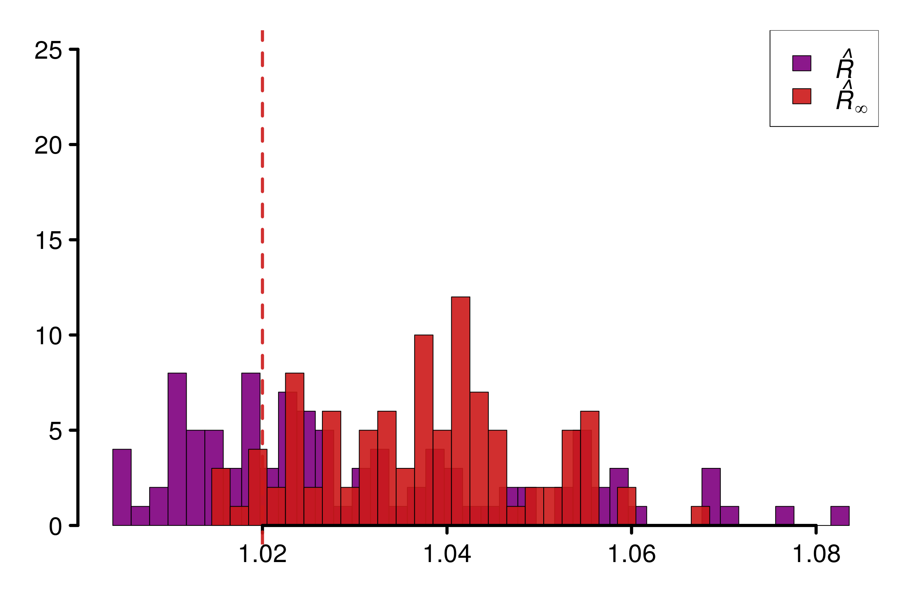
Doing the same experiment but with a new \(\Sigma\) on each repetitions will result on a histogram more spread for \(\hat{R}_\infty\):
d <- 5
M <- 4
N <- 100
reps <- 100
r_functions <- c(brooks_multivariate_rhat, rhat_infinity)
r_names <- c("Brooks Multivariate R-hat", "R-hat-infinity")
r_colors <- c(colors[3], colors[4])
R_matrix <- repetitions_R(chains_func = (function() gen_mvnormal_chains(M, N, d)),
r_func = r_functions,
r_names = r_names,
reps = reps)
xlabels = c(1, 1.02, 1.04, 1.06, 1.08)
plot_hist(R_matrix, colors = r_colors,
xlabels = xlabels, bin_size = 0.002,
lim_y_axis = 20, vaxis_pos = 0.997,
plot_threshold = F)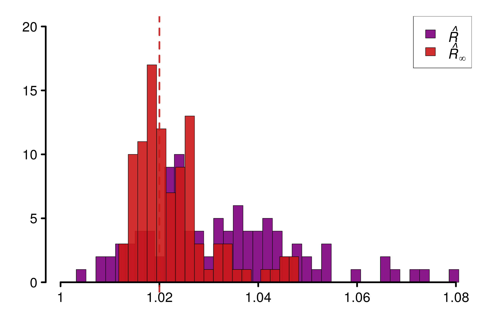
To avoid the issue of being sensitive only to a specific direction, \(\hat{R}_\infty\) can be computed on all directions, which means if \(d=3\) that \(\hat{R}\) is computed on \[ I\left(\theta_1^{(n,m)} \leq x_1, \theta_2^{(n,m)} \leq x_2, \theta_3^{(n,m)} \leq x_3\right)\\ I\left(\theta_1^{(n,m)} \geq x_1, \theta_2^{(n,m)} \leq x_2, \theta_3^{(n,m)} \leq x_3\right)\\ I\left(\theta_1^{(n,m)} \leq x_1, \theta_2^{(n,m)} \geq x_2, \theta_3^{(n,m)} \leq x_3\right)\\ I\left(\theta_1^{(n,m)} \geq x_1, \theta_2^{(n,m)} \geq x_2, \theta_3^{(n,m)} \leq x_3\right)\\ \] The other half of the possibilities is avoided by symmetry. Then, we can define \(\hat{R}^{(\text{max})}_\infty\) as the maximum of all the \(\hat{R}_\infty\) computed on all directions. Despite a unreasonable computational cost (with \(2^{d-1}\) \(\hat{R}_\infty\) to compute), this solutions seems satisfying in small dimension:
d_max = 6
M = 4
N = 100
reps = 200
r_functions = c(rhat_infinity, rhat_infinity_max_directions)
r_names = c("One Direction", "All Directions")
R_values = repetitions_R(chains_func = (function() gen_mvnormal_chains(M, N, 2)),
r_func = r_functions,
r_names = r_names,
reps = reps)
R_array = array(c(R_values[,1], rep("d = 2", reps), rep("1 Dir", reps)), dim = c(reps,3))
R_array = rbind(R_array, array(c(R_values[,2], rep("d = 2", reps), rep("All Dir", reps)), dim = c(reps,3)))
colnames(R_array) = c("Values", "Dim", "Nb_Dir")
for (d in 3:d_max){
R_val_d = repetitions_R(chains_func = (function() gen_mvnormal_chains(M, N, d)),
r_func = r_functions,
r_names = r_names,
reps = reps)
d_names = c(paste("d =", d))
R_array = rbind(R_array, array(c(R_val_d[,1], rep(d_names, reps), rep("1 Dir", reps)), dim = c(reps,3)))
R_array = rbind(R_array, array(c(R_val_d[,2], rep(d_names, reps), rep("All Dir", reps)), dim = c(reps,3)))
}
R_df = as.data.frame(R_array)
R_df$Values = as.numeric(R_df$Values)
ggplot(R_df, aes(x = Values, y = as.factor(Dim), fill = Nb_Dir)) +
geom_density_ridges(stat = "binline", bins= 40,
scale = 1, alpha = 0.7) +
scale_y_discrete(limits = R_df$Dim) +
ylab("Dimensions") + labs(fill = element_blank()) +
scale_x_continuous(limits = c(1,1.14),
n.breaks = 8) +
scale_fill_manual(values=c("#32a632", "#4287f5")) +
theme_ridges(font_size=22)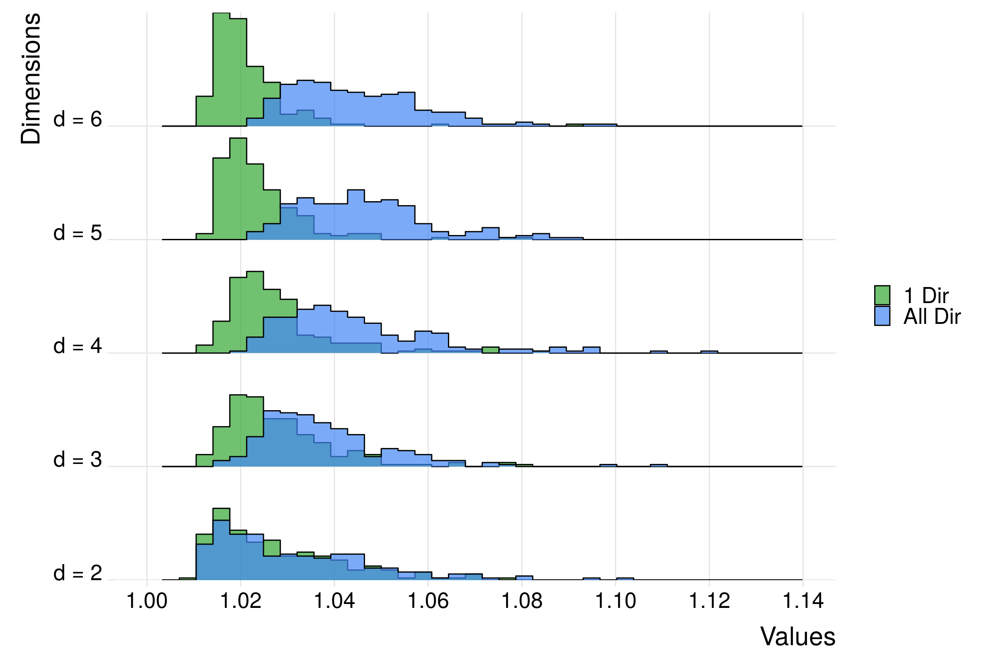
Here, \(\hat{R}^{(\text{max})}_\infty\) seems to stay robust with respect to this curse of dimensionality in terms of sensitivity, as the histograms look invariant when \(d\) increases, contrary to \(\hat{R}_\infty\).
2.3 Bayesian logistic regression
As a practical bayesian example, we consider hierarchical logistic regression using the following model: \[\begin{equation*} \boldsymbol{\beta} \sim \mathcal{N}(0, 0.35^2. \boldsymbol{I}_4), \quad y_j \sim \text{Bernoulli}\left(\frac{1}{1+e^{-\boldsymbol{x}_j^\top\boldsymbol{\beta}}}\right). \end{equation*}\]
writeLines(readLines(paste(stan_folder, "logit_reg.stan", sep="")))data {
int<lower=1> D;
int<lower=0> N;
real<lower=0> tau;
int<lower=0, upper=1> y[N];
real x[N,D];
}
parameters {
real bet[D];
}
model {
for (d in 1:D)
bet[d] ~ normal(0, tau);
for (n in 1:N)
y[n] ~ bernoulli(inv_logit(dot_product(x[n], bet)));
}We run Stan using the dataset available in the package .
data("logit")
d <- 4
logit_data<- read_rdump(paste(stan_folder, "logit_reg.data.R", sep=""))
fit_logit <- stan(file = paste(stan_folder, "logit_reg.stan", sep=""),
data=logit_data, seed = 12,
iter=200, chains=4, refresh=0)Running /usr/lib/R/bin/R CMD SHLIB foo.c
gcc -std=gnu99 -std=gnu11 -I"/usr/share/R/include" -DNDEBUG -I"/scratch/tmoins/R/x86_64-pc-linux-gnu-library/4.1/Rcpp/include/" -I"/scratch/tmoins/R/x86_64-pc-linux-gnu-library/4.1/RcppEigen/include/" -I"/scratch/tmoins/R/x86_64-pc-linux-gnu-library/4.1/RcppEigen/include/unsupported" -I"/scratch/tmoins/R/x86_64-pc-linux-gnu-library/4.1/BH/include" -I"/scratch/tmoins/R/x86_64-pc-linux-gnu-library/4.1/StanHeaders/include/src/" -I"/scratch/tmoins/R/x86_64-pc-linux-gnu-library/4.1/StanHeaders/include/" -I"/scratch/tmoins/R/x86_64-pc-linux-gnu-library/4.1/RcppParallel/include/" -I"/scratch/tmoins/R/x86_64-pc-linux-gnu-library/4.1/rstan/include" -DEIGEN_NO_DEBUG -DBOOST_DISABLE_ASSERTS -DBOOST_PENDING_INTEGER_LOG2_HPP -DSTAN_THREADS -DBOOST_NO_AUTO_PTR -include '/scratch/tmoins/R/x86_64-pc-linux-gnu-library/4.1/StanHeaders/include/stan/math/prim/mat/fun/Eigen.hpp' -D_REENTRANT -DRCPP_PARALLEL_USE_TBB=1 -fpic -g -O2 -fdebug-prefix-map=/build/r-base-J7pprH/r-base-4.1.2=. -fstack-protector-strong -Wformat -Werror=format-security -Wdate-time -D_FORTIFY_SOURCE=2 -g -c foo.c -o foo.o
In file included from /scratch/tmoins/R/x86_64-pc-linux-gnu-library/4.1/RcppEigen/include/Eigen/Core:88:0,
from /scratch/tmoins/R/x86_64-pc-linux-gnu-library/4.1/RcppEigen/include/Eigen/Dense:1,
from /scratch/tmoins/R/x86_64-pc-linux-gnu-library/4.1/StanHeaders/include/stan/math/prim/mat/fun/Eigen.hpp:13,
from <command-line>:0:
/scratch/tmoins/R/x86_64-pc-linux-gnu-library/4.1/RcppEigen/include/Eigen/src/Core/util/Macros.h:628:1: error: unknown type name ‘namespace’
namespace Eigen {
^~~~~~~~~
/scratch/tmoins/R/x86_64-pc-linux-gnu-library/4.1/RcppEigen/include/Eigen/src/Core/util/Macros.h:628:17: error: expected ‘=’, ‘,’, ‘;’, ‘asm’ or ‘__attribute__’ before ‘{’ token
namespace Eigen {
^
In file included from /scratch/tmoins/R/x86_64-pc-linux-gnu-library/4.1/RcppEigen/include/Eigen/Dense:1:0,
from /scratch/tmoins/R/x86_64-pc-linux-gnu-library/4.1/StanHeaders/include/stan/math/prim/mat/fun/Eigen.hpp:13,
from <command-line>:0:
/scratch/tmoins/R/x86_64-pc-linux-gnu-library/4.1/RcppEigen/include/Eigen/Core:96:10: fatal error: complex: Aucun fichier ou dossier de ce type
#include <complex>
^~~~~~~~~
compilation terminated.
/usr/lib/R/etc/Makeconf:168: recipe for target 'foo.o' failed
make: *** [foo.o] Error 1mon <- monitor(fit_logit)
chains <- as.array(fit_logit)
dim_chains <- dim(chains)
rhat_inf <- c()
for (i in 1:dim_chains[3]) {
chains_i <- chains[, , i]
rhat_inf_i <- rhat_infinity(chains_i, max_nb_points = "ALL")
rhat_inf <- c(rhat_inf, rhat_inf_i)
}
mon[["Rhat_inf"]] <- rhat_inf
monInference for the input samples (4 chains: each with iter = 200; warmup = 100):
Q5 Q50 Q95 Mean SD Rhat Bulk_ESS Tail_ESS Rhat_inf
bet[1] 0.12 0.50 0.90 0.49 0.23 1.00 410 332 1.02
bet[2] 0.31 0.63 1.01 0.63 0.21 1.01 592 330 1.01
bet[3] -0.09 0.28 0.67 0.28 0.23 1.01 412 301 1.01
bet[4] 0.02 0.40 0.79 0.41 0.25 1.01 366 263 1.01
lp__ -56.71 -52.81 -51.61 -53.33 1.68 1.02 219 311 1.02
For each parameter, Bulk_ESS and Tail_ESS are crude measures of
effective sample size for bulk and tail quantities respectively (an ESS > 100
per chain is considered good), and Rhat is the potential scale reduction
factor on rank normalized split chains (at convergence, Rhat <= 1.01).Despite a low number of iterations, all the different univariate \(\hat{R}_\infty\) are below \(1.03\) when replicated, and the rank-\(\hat{R}\) are below \(1.01\). We compare the proportion of \(\hat{R}^{(\text{max})}_\infty\) replications over \(1.03\), with the proportion of univariate \(\hat{R}_\infty\) for lp__ over \(1.02\):
reps <- 50
gen_beta_logit <- function(i){
# fit_logit <- stan(file = paste(stan_folder, "logit_reg.stan", sep=""),
# data=logit_data,
# iter=200, chains=4, refresh=0)
# saveRDS(fit_logit, paste(stan_folder, "logit/logit_reg_", i, ".rds", sep=""))
fit_logit <- readRDS(paste(stan_folder, "logit/logit_reg_", i, ".rds", sep=""))
mon <- monitor(fit_logit)
chains <- as.array(fit_logit)
return (aperm(chains, c(1,3,2)))
}
r_functions = c(brooks_multivariate_rhat, rhat_infinity_max_directions)
r_names = c("Brooks Multivariate R-hat", "max-R-hat")
r_colors = c(colors[4], colors[2])
R_matrix_logit <- repetitions_R(chains_func = gen_beta_logit,
r_func = r_functions,
r_names = r_names,
reps = reps, saved_model = TRUE)
xlabels = c(1, 1.01, 1.02, 1.03, 1.04, 1.05)
plot_hist(R_matrix_logit, colors = r_colors, xlabels = xlabels,
vaxis_pos = 0.998, plot_threshold = F, threshold = 1.03,
bin_size = 0.003, lim_y_axis = 25)gen_beta_logit_lp <- function(i){
fit_logit <- readRDS(paste(stan_folder, "logit/logit_reg_", i, ".rds", sep=""))
mon <- monitor(fit_logit)
chains <- as.array(fit_logit)
return (chains[, , 5])
}
r_functions <- c(trad_rhat, rhat, rhat_infinity)
r_names <- c("R-hat",
"Rank-R-hat",
"R-hat-infinity")
r_colors <- c(colors[4], colors[5], colors[3])
R_matrix_logit2 <- repetitions_R(chains_func = gen_beta_logit_lp,
r_func = r_functions,
r_names = r_names,
reps = reps, saved_model = TRUE)
xlabels = c(1, 1.01, 1.02, 1.03, 1.04, 1.05)
plot_hist(R_matrix_logit2, colors = r_colors, vaxis_pos = 0.998,
xlabels = xlabels, plot_threshold = T,
bin_size = 0.003, lim_y_axis = 25)Both diagnostic looks similar: although most of simulations seems satisfying, a non-negligible part of replications seems to suffer from a lack of convergence.
3 Empirical examples
This section is dedicated to practical case for Bayesian inference.
3.1 Autoregressive model
We start by running a basic autoreggressive model to study the case of a Markov chain with different variance on the chains: \[\begin{equation*} \theta^{(i+1,j)} = \rho \theta^{(i,j)} + \epsilon_{i,j}, \quad \text{with} \quad \epsilon_{i,j} \sim \mathcal{N}(0,\sigma^2_j), \end{equation*}\] where \(\rho \in (0,1)\) and \(\sigma_j > 0\).
autoregressive <- function(n, rho, sigma){
chain <- c()
pre <- 0
eps <- rnorm(n, 0, sigma)
for (t in 1:n){
suiv <- rho*pre+eps[t]
chain <- c(chain, suiv)
pre <- suiv
}
return(chain)
}
gen_autoreg_chains <- function(M, N, rho, sigma, sigmaM){
return (array(c(replicate(M-1, autoregressive(N, rho, sigma)),
autoregressive(N, rho, sigmaM)), c(N,M)))
}Clearly \(\hat{R}_\infty\) diagnose a convergence issue:
M <- 4
sigma <- 1
sigmaM <- 2
rho <- 1/2
chains = gen_autoreg_chains(M, N, rho, sigma, sigmaM)
rhat_infinity(chains, verbose = T)Threshold at confidence level 5%: 1.0195
Local R-hat obtained: 1.048
p-value: < 0.001
WARNING: A convergence issue has been diagnosed[1] 1.048033simulated_rhat = all_local_rhat(chains, max_nb_points = "ALL")
plot_local_r(chains, simulated_rhat, col=c(colors[3], colors[2]),
xlim = c(-6,6), ylim=c(1,1.07), title ="")Comparison of different versions of \(\hat{R}\) using replications:
r_functions <- c(trad_rhat, rhat, rhat_infinity)
r_names <- c("R-hat", "Rank-R-hat", "R-hat-infinity")
r_colors <- c(colors[4], colors[5], colors[3])
R_matrix_autoreg <- repetitions_R(
chains_func = (function() gen_autoreg_chains(M, N, rho, sigma, sigmaM)),
r_func = r_functions,
r_names = r_names,
reps = reps)
plot_hist(R_matrix_autoreg, colors = r_colors,
xlabels = c(1, 1.02, 1.04, 1.06, 1.08, 1.1),
bin_size = 0.004, lim_y_axis = 20)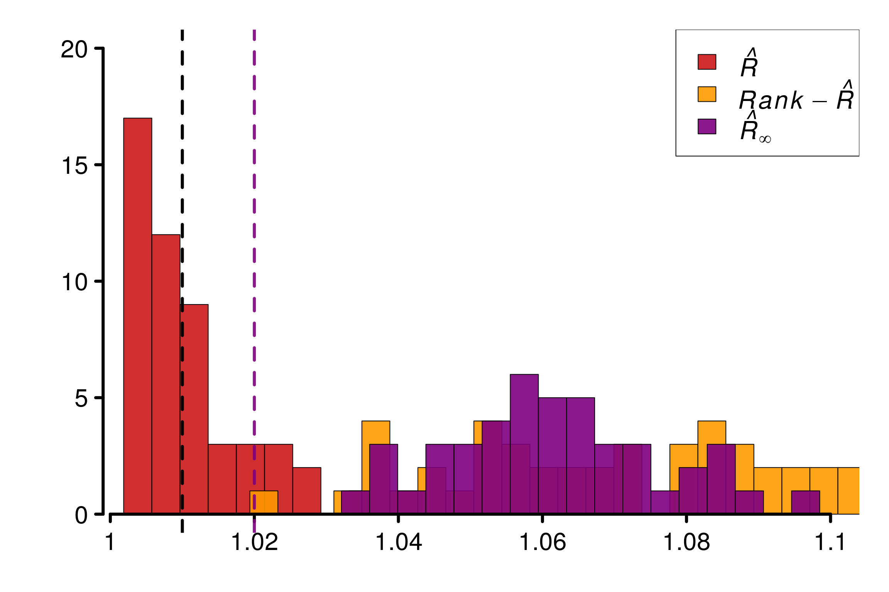
3.2 HMC on Cauchy distribution
In this section, we will study two parameterization of Cauchy using HMC:One would expect convergence issues with the nominal parameterisation and not with the alternative one. For both, the process of selecting the worst parameters among the \(50\) ones is iterated for the generation of replications.
3.2.1 Nominal parameterization
Model :
writeLines(readLines(paste(stan_folder, "cauchy_nom.stan", sep="")))parameters {
vector[50] x;
}
model {
x ~ cauchy(0, 1);
}
generated quantities {
real I = fabs(x[1]) < 1 ? 1 : 0;
}# fit_nom <- stan(file = paste(stan_folder, "cauchy_nom.stan", sep=""), seed = 7878, refresh = 0)
# saveRDS(fit_nom, paste(stan_folder, "cauchy_nom.rds", sep=""))
fit_nom <- readRDS(paste(stan_folder, "cauchy_fits/cauchy_nom.rds", sep=""))
mon <- monitor(fit_nom)
which_max_rhat <- which.max(mon[1:50, 'Rhat'])
max_rhat <- max(mon[1:50, 'Rhat'])
subset(mon, Rhat == max_rhat)Inference for the input samples ( chains: each with iter = ; warmup = ):
Q5 Q50 Q95 Mean SD Rhat Bulk_ESS Tail_ESS
x[18] -4.1 0.56 172.82 35.87 65.4 1.54 7 32
For each parameter, Bulk_ESS and Tail_ESS are crude measures of
effective sample size for bulk and tail quantities respectively (an ESS > 100
per chain is considered good), and Rhat is the potential scale reduction
factor on rank normalized split chains (at convergence, Rhat <= 1.01).Plot of \(\hat{R}(x)\):
chains <- as.array(fit_nom)
dim_chains <- dim(chains)
rhat_inf <- c()
for (i in 1:dim_chains[3]) {
chains_i <- chains[, , i]
rhat_inf_i <- rhat_infinity(chains_i)
rhat_inf <- c(rhat_inf, rhat_inf_i)
}
mon[["Rhat_inf"]] <- rhat_inf
which_max_rhat_inf <- which.max(mon[1:50, 'Rhat_inf'])
rhat_infinity(chains[ , , which_max_rhat_inf], verbose = T)Threshold at confidence level 5%: 1.0195
Local R-hat obtained: 7.364
p-value: < 0.001
WARNING: A convergence issue has been diagnosed[1] 7.364029simulated_rhat = all_local_rhat(chains[ , , which_max_rhat_inf], max_nb_points = "ALL")
xlabels = 1:10
plot_local_r(chains[ , , which_max_rhat_inf], simulated_rhat,
col=c(colors[3], colors[2]), xlabels = xlabels,
xlim = c(-50,200), ylim=c(1,10), title ="")Comparison of different versions of \(\hat{R}\) using replications:
gen_diverging_cauchy <- function(i){
# fit_nom <- stan(file = paste(stan_folder, "cauchy_nom.stan", sep=""), refresh = 0)
# saveRDS(fit_nom, paste(stan_folder, "cauchy_fits/cauchy_nom_", i, ".rds", sep=""))
fit_nom <- readRDS(paste(stan_folder, "cauchy_fits/cauchy_nom_", i, ".rds", sep=""))
mon <- monitor(fit_nom)
chains <- as.array(fit_nom)
dim_chains <- dim(chains)
rhat_inf <- c()
for (i in 1:dim_chains[3]) {
chains_i <- chains[, , i]
rhat_inf_i <- rhat_infinity(chains_i)
rhat_inf <- c(rhat_inf, rhat_inf_i)
}
mon[["Rhat_inf"]] <- rhat_inf
which_max_rhat_inf <- which.max(mon[1:50, 'Rhat_inf'])
return (chains[, , which_max_rhat_inf])
}
r_functions <- c(trad_rhat, rhat, rhat_infinity)
r_names <- c("R-hat", "Rank-R-hat", "R-hat-infinity")
r_colors <- c(colors[4], colors[5], colors[3])
R_matrix_cauchy <- repetitions_R(chains_func = gen_diverging_cauchy,
r_func = r_functions,
r_names = r_names,
reps = reps, saved_model = TRUE)
xlabels = c(1, 1.1, 1.2, 1.3, 1.4)
plot_hist(R_matrix_cauchy, colors = r_colors, xlabels = xlabels,
bin_size = 0.017, lim_y_axis = 20)3.2.2 Alternative parameterization
Model :
writeLines(readLines(paste(stan_folder, "cauchy_alt_1.stan", sep="")))parameters {
vector[50] x_a;
vector<lower=0>[50] x_b;
}
transformed parameters {
vector[50] x = x_a ./ sqrt(x_b);
}
model {
x_a ~ normal(0, 1);
x_b ~ gamma(0.5, 0.5);
}
generated quantities {
real I = fabs(x[1]) < 1 ? 1 : 0;
}# fit_alt1 <- stan(file = paste(stan_folder, "cauchy_alt_1.stan", sep=""), seed = 7878, refresh = 0)
# saveRDS(fit_alt1, paste(stan_folder, "cauchy_fits/cauchy_alt.rds", sep=""))
fit_alt1 <- readRDS(paste(stan_folder, "cauchy_fits/cauchy_alt.rds", sep=""))
mon <- monitor(fit_alt1)
which_max_rhat <- which.max(mon[101:150, 'Rhat'])
max_rhat <- max(mon[101:150, 'Rhat'])
subset(mon, Rhat == max_rhat)Inference for the input samples ( chains: each with iter = ; warmup = ):
Q5 Q50 Q95 Mean SD Rhat Bulk_ESS Tail_ESS
x[40] -6.22 0.03 6.33 -6.15 204.09 1 3667 2250
For each parameter, Bulk_ESS and Tail_ESS are crude measures of
effective sample size for bulk and tail quantities respectively (an ESS > 100
per chain is considered good), and Rhat is the potential scale reduction
factor on rank normalized split chains (at convergence, Rhat <= 1.01).Plot of \(\hat{R}(x)\):
chains <- as.array(fit_alt1)
dim_chains <- dim(chains)
rhat_inf <- c()
for (i in 1:dim_chains[3]) {
chains_i <- chains[, , i]
rhat_inf_i <- rhat_infinity(chains_i)
rhat_inf <- c(rhat_inf, rhat_inf_i)
}
mon[["Rhat_inf"]] <- rhat_inf
which_max_rhat_inf <- which.max(mon[101:150, 'Rhat_inf'])
rhat_infinity(chains[ , , which_max_rhat_inf], verbose = T)Threshold at confidence level 5%: 1.0195
Local R-hat obtained: 1.0015
p-value: 1
At 5%, no convergence issues have been diagnosed[1] 1.001452simulated_rhat = all_local_rhat(chains[ , , which_max_rhat_inf], max_nb_points = "ALL")
xlabels = c(1, 1.01, 1.02, 1.03)
plot_local_r(chains[, , which_max_rhat], simulated_rhat,
col=c(colors[3], colors[2]), xlabels = xlabels,
xlim = c(-4,4), ylim=c(0.9995,1.03), title ="")Comparison of different versions of \(\hat{R}\) using replications:
gen_converging_cauchy <- function(i){
# fit_nom <- stan(file = paste(stan_folder, "cauchy_alt_1.stan", sep=""), refresh = 0)
# saveRDS(fit_nom, paste(stan_folder, "cauchy_fits/cauchy_alt_", i, ".rds", sep=""))
fit_nom <- readRDS(paste(stan_folder, "cauchy_fits/cauchy_alt_", i, ".rds", sep=""))
mon <- monitor(fit_nom)
chains <- as.array(fit_nom)
dim_chains <- dim(chains)
rhat_inf <- c()
for (i in 1:dim_chains[3]) {
chains_i <- chains[, , i]
rhat_inf_i <- rhat_infinity(chains_i)
rhat_inf <- c(rhat_inf, rhat_inf_i)
}
mon[["Rhat_inf"]] <- rhat_inf
which_max_rhat_inf <- which.max(mon[101:150, 'Rhat_inf'])
return (chains[, , which_max_rhat_inf])
}
r_functions <- c(trad_rhat, rhat, rhat_infinity)
r_names <- c("R-hat", "Rank-R-hat", "R-hat-infinity")
r_colors <- c(colors[4], colors[5], colors[3])
R_matrix_cauchy2 <- repetitions_R(chains_func = gen_converging_cauchy,
r_func = r_functions,
r_names = r_names,
reps = reps,
saved_model = TRUE)
xlabels = c(1, 1.005, 1.01, 1.015, 1.02, 1.025, 1.03)
plot_hist(R_matrix_cauchy2, colors = r_colors, xlabels = xlabels,
bin_size = 0.0018, lim_y_axis = reps)3.3 Hierarchical model: Eight Schools
Model :
writeLines(readLines(paste(stan_folder, "eight_schools_cp.stan", sep="")))data {
int<lower=0> J;
real y[J];
real<lower=0> sigma[J];
}
parameters {
real mu;
real<lower=0> tau;
real theta[J];
}
model {
mu ~ normal(0, 5);
tau ~ cauchy(0, 5);
theta ~ normal(mu, tau);
y ~ normal(theta, sigma);
}As a classical Bayesian example, we consider using HMC on a hierarchical Bayesian model and in particular the eight-school, where two parameterisations are possible to model the problem:
1. Centered parameterisation (CP):
$\theta_j \sim \mathcal{N}(\mu,\tau), \quad y_j \sim \mathcal{N}(\theta_j,\sigma^2_j)$
2. Non-centered parameterisation (NCP):
$\bar{\theta}_j \sim \mathcal{N}(0,1), \quad \theta_j = \mu + \tau \bar{\theta}_j, \quad y_j \sim \mathcal{N}(\theta_j,\sigma^2_j)$Similarly to Vehtari et al. (2021), we analyse convergence of the chains by studying parameter \(\tau\).
3.3.1 Centered parameterisation
eight_schools <- read_rdump(paste(stan_folder, "eight_schools.data.R", sep=""))
# fit_cp <- stan(
# file = paste(stan_folder, "eight_schools_cp.stan", sep=""), data = eight_schools,
# iter = 2000, chains = 4, seed = 120, refresh = 0,
# control = list(adapt_delta = 0.95)
# )
# saveRDS(fit_cp, paste(stan_folder, "eight_schools_fits/eight_schools_cp.rds", sep=""))
fit_cp <- readRDS(paste(stan_folder, "eight_schools_fits/eight_schools_cp.rds", sep=""))
mon <- monitor(fit_cp)
print(mon)Inference for the input samples (4 chains: each with iter = 2000; warmup = 1000):
Q5 Q50 Q95 Mean SD Rhat Bulk_ESS Tail_ESS
mu -0.94 4.84 9.48 4.80 3.32 1.04 87 693
tau 0.64 2.80 10.29 3.77 3.27 1.06 94 123
theta[1] -1.48 6.43 17.06 6.68 5.81 1.01 622 1021
theta[2] -2.61 5.52 12.57 5.35 4.79 1.02 309 1192
theta[3] -5.21 4.62 11.85 4.31 5.40 1.03 169 1291
theta[4] -3.41 5.29 12.03 5.04 4.80 1.03 216 1617
theta[5] -4.66 4.21 10.29 3.80 4.82 1.03 216 1155
theta[6] -4.38 4.69 11.01 4.40 4.88 1.02 186 1648
theta[7] -0.77 6.65 15.36 6.74 5.03 1.01 525 844
theta[8] -3.48 5.46 13.39 5.31 5.32 1.02 467 1290
lp__ -25.23 -14.77 -2.54 -14.33 7.04 1.08 46 104
For each parameter, Bulk_ESS and Tail_ESS are crude measures of
effective sample size for bulk and tail quantities respectively (an ESS > 100
per chain is considered good), and Rhat is the potential scale reduction
factor on rank normalized split chains (at convergence, Rhat <= 1.01).Plot of \(\hat{R}(x)\)
chains <- as.array(fit_cp)
dim_chains <- dim(chains)
simulated_rhat = all_local_rhat(chains[, , "tau"], max_nb_points = "ALL")
xlabels = c(1, 1.01, 1.02, 1.03, 1.04)
plot_local_r(chains[, , "tau"], simulated_rhat,
col=c(colors[3], colors[2]), xlabels = xlabels,
xlim = c(0,25), ylim=c(0.999,1.04), title ="")Comparison of different versions of \(\hat{R}\) using replications:
gen_centered_eight_school <- function(i){
# fit_cp <- stan(
# file = paste(stan_folder, "eight_schools_cp.stan", sep=""), data = eight_schools,
# iter = 2000, chains = 4, refresh = 0,
# control = list(adapt_delta = 0.95)
# )
# saveRDS(fit_cp, paste(stan_folder, "eight_schools_fits/eight_schools_cp_", i, ".rds", sep=""))
fit_cp <- readRDS(paste(stan_folder, "eight_schools_fits/eight_schools_cp_", i, ".rds", sep=""))
mon <- monitor(fit_cp)
chains <- as.array(fit_cp)
return (chains[, , "tau"])
}
r_functions <- c(trad_rhat, rhat, rhat_infinity)
r_names <- c("R-hat", "Rank-R-hat", "R-hat-infinity")
r_colors <- c(colors[4], colors[5], colors[3])
R_matrix_8schools <- repetitions_R(chains_func = gen_centered_eight_school,
r_func = r_functions,
r_names = r_names,
reps = reps,
saved_model = TRUE)
xlabels = c(1, 1.02, 1.04, 1.06, 1.08, 1.1, 1.12, 1.14)
plot_hist(R_matrix_8schools, colors = r_colors, xlabels = xlabels,
bin_size = 0.005, lim_y_axis = 30)3.3.2 Non-centered parameterisation
Model :
writeLines(readLines(paste(stan_folder, "eight_schools_ncp.stan", sep="")))data {
int<lower=0> J;
real y[J];
real<lower=0> sigma[J];
}
parameters {
real mu;
real<lower=0> tau;
real theta_tilde[J];
}
transformed parameters {
real theta[J];
for (j in 1:J)
theta[j] = mu + tau * theta_tilde[j];
}
model {
mu ~ normal(0, 5);
tau ~ cauchy(0, 5);
theta_tilde ~ normal(0, 1);
y ~ normal(theta, sigma);
}fit_ncp2 <- stan(
file = paste(stan_folder, "eight_schools_ncp.stan", sep=""), data = eight_schools,
iter = 2000, chains = 4, seed = 483892929, refresh = 0,
control = list(adapt_delta = 0.95)
)Running /usr/lib/R/bin/R CMD SHLIB foo.c
gcc -std=gnu99 -std=gnu11 -I"/usr/share/R/include" -DNDEBUG -I"/scratch/tmoins/R/x86_64-pc-linux-gnu-library/4.1/Rcpp/include/" -I"/scratch/tmoins/R/x86_64-pc-linux-gnu-library/4.1/RcppEigen/include/" -I"/scratch/tmoins/R/x86_64-pc-linux-gnu-library/4.1/RcppEigen/include/unsupported" -I"/scratch/tmoins/R/x86_64-pc-linux-gnu-library/4.1/BH/include" -I"/scratch/tmoins/R/x86_64-pc-linux-gnu-library/4.1/StanHeaders/include/src/" -I"/scratch/tmoins/R/x86_64-pc-linux-gnu-library/4.1/StanHeaders/include/" -I"/scratch/tmoins/R/x86_64-pc-linux-gnu-library/4.1/RcppParallel/include/" -I"/scratch/tmoins/R/x86_64-pc-linux-gnu-library/4.1/rstan/include" -DEIGEN_NO_DEBUG -DBOOST_DISABLE_ASSERTS -DBOOST_PENDING_INTEGER_LOG2_HPP -DSTAN_THREADS -DBOOST_NO_AUTO_PTR -include '/scratch/tmoins/R/x86_64-pc-linux-gnu-library/4.1/StanHeaders/include/stan/math/prim/mat/fun/Eigen.hpp' -D_REENTRANT -DRCPP_PARALLEL_USE_TBB=1 -fpic -g -O2 -fdebug-prefix-map=/build/r-base-J7pprH/r-base-4.1.2=. -fstack-protector-strong -Wformat -Werror=format-security -Wdate-time -D_FORTIFY_SOURCE=2 -g -c foo.c -o foo.o
In file included from /scratch/tmoins/R/x86_64-pc-linux-gnu-library/4.1/RcppEigen/include/Eigen/Core:88:0,
from /scratch/tmoins/R/x86_64-pc-linux-gnu-library/4.1/RcppEigen/include/Eigen/Dense:1,
from /scratch/tmoins/R/x86_64-pc-linux-gnu-library/4.1/StanHeaders/include/stan/math/prim/mat/fun/Eigen.hpp:13,
from <command-line>:0:
/scratch/tmoins/R/x86_64-pc-linux-gnu-library/4.1/RcppEigen/include/Eigen/src/Core/util/Macros.h:628:1: error: unknown type name ‘namespace’
namespace Eigen {
^~~~~~~~~
/scratch/tmoins/R/x86_64-pc-linux-gnu-library/4.1/RcppEigen/include/Eigen/src/Core/util/Macros.h:628:17: error: expected ‘=’, ‘,’, ‘;’, ‘asm’ or ‘__attribute__’ before ‘{’ token
namespace Eigen {
^
In file included from /scratch/tmoins/R/x86_64-pc-linux-gnu-library/4.1/RcppEigen/include/Eigen/Dense:1:0,
from /scratch/tmoins/R/x86_64-pc-linux-gnu-library/4.1/StanHeaders/include/stan/math/prim/mat/fun/Eigen.hpp:13,
from <command-line>:0:
/scratch/tmoins/R/x86_64-pc-linux-gnu-library/4.1/RcppEigen/include/Eigen/Core:96:10: fatal error: complex: Aucun fichier ou dossier de ce type
#include <complex>
^~~~~~~~~
compilation terminated.
/usr/lib/R/etc/Makeconf:168: recipe for target 'foo.o' failed
make: *** [foo.o] Error 1# saveRDS(fit_ncp2, paste(stan_folder, "eight_schools_fits/eight_schools_ncp.rds", sep=""))
fit_ncp2 <- readRDS(paste(stan_folder, "eight_schools_fits/eight_schools_ncp.rds", sep=""))
mon <- monitor(fit_ncp2)
print(mon)Inference for the input samples (4 chains: each with iter = 2000; warmup = 1000):
Q5 Q50 Q95 Mean SD Rhat Bulk_ESS Tail_ESS
mu -1.13 4.53 9.85 4.49 3.32 1 5375 3332
tau 0.26 2.79 9.74 3.56 3.09 1 3281 2729
theta_tilde[1] -1.30 0.32 1.87 0.30 0.97 1 5571 3052
theta_tilde[2] -1.42 0.08 1.55 0.08 0.90 1 4405 2885
theta_tilde[3] -1.69 -0.10 1.45 -0.09 0.96 1 5486 2531
theta_tilde[4] -1.52 0.05 1.64 0.05 0.94 1 5183 3102
theta_tilde[5] -1.64 -0.16 1.33 -0.16 0.91 1 4884 3289
theta_tilde[6] -1.60 -0.07 1.46 -0.07 0.94 1 5584 3087
theta_tilde[7] -1.26 0.38 1.91 0.36 0.96 1 4977 3112
theta_tilde[8] -1.52 0.07 1.64 0.07 0.96 1 5209 3039
theta[1] -1.73 5.67 15.98 6.13 5.53 1 4803 3138
theta[2] -2.50 4.87 12.61 4.94 4.56 1 5830 3692
theta[3] -4.28 4.21 11.75 4.03 5.08 1 4702 3378
theta[4] -2.70 4.80 12.40 4.78 4.75 1 5451 3472
theta[5] -3.95 4.02 10.82 3.76 4.62 1 5179 3486
theta[6] -4.22 4.31 11.42 4.08 4.93 1 5537 3372
theta[7] -1.04 6.01 15.22 6.37 5.07 1 5121 3569
theta[8] -3.13 4.90 13.09 4.95 5.19 1 5124 3452
lp__ -11.02 -6.52 -3.62 -6.83 2.31 1 1850 2629
For each parameter, Bulk_ESS and Tail_ESS are crude measures of
effective sample size for bulk and tail quantities respectively (an ESS > 100
per chain is considered good), and Rhat is the potential scale reduction
factor on rank normalized split chains (at convergence, Rhat <= 1.01).Plot of \(\hat{R}(x)\):
chains <- as.array(fit_ncp2)
dim_chains <- dim(chains)
simulated_rhat = all_local_rhat(chains[, , "tau"], max_nb_points = "ALL")
xlabels = c(1, 1.01, 1.02, 1.03, 1.04)
plot_local_r(chains[, , "tau"], simulated_rhat,
col=c(colors[3], colors[2]), xlabels = xlabels,
xlim = c(0,25), ylim=c(0.999,1.04), title ="")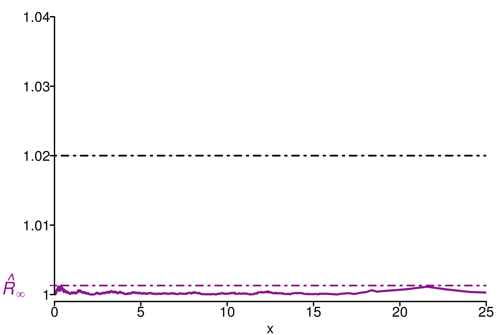
Comparison of different versions of \(\hat{R}\) using replications:
gen_ncp_eight_school <- function(i){
# fit_ncp2 <- stan(
# file = paste(stan_folder, "eight_schools_ncp.stan", sep=""), data = eight_schools,
# iter = 2000, chains = 4, refresh = 0,
# control = list(adapt_delta = 0.95)
# )
# saveRDS(fit_ncp2, paste(stan_folder, "eight_schools_fits/eight_schools_ncp_", i, ".rds", sep=""))
fit_ncp2 <- readRDS(paste(stan_folder, "eight_schools_fits/eight_schools_ncp_", i, ".rds", sep=""))
mon <- monitor(fit_ncp2)
chains <- as.array(fit_ncp2)
return (chains[, , "tau"])
}
r_functions <- c(trad_rhat, rhat, rhat_infinity)
r_names <- c("R-hat", "Rank-R-hat", "R-hat-infinity")
r_colors <- c(colors[4], colors[5], colors[3])
R_matrix_8schools2 <- repetitions_R(chains_func = gen_ncp_eight_school,
r_func = r_functions,
r_names = r_names,
reps = reps,
saved_model = TRUE)
xlabels = c(1, 1.005, 1.01, 1.015, 1.02, 1.025, 1.03)
plot_hist(R_matrix_8schools2, colors = r_colors, xlabels = xlabels,
bin_size = 0.0015, lim_y_axis = reps)3.4 Summary
The following boxplot summarizes the values of replicated \(\hat{R}\), rank-\(\hat{R}\) and \(\hat{R}_\infty\) on the different examples of this section:
data=data.frame(r_version, r_experiment, r_values)
ggplot(data, aes(x=r_experiment, y=r_values, fill=r_version)) +
geom_boxplot() +
geom_hline(yintercept=1.01, linetype="dashed",
color = "black", size=0.5) +
geom_hline(yintercept=1.02, linetype="dashed",
color = "green", size=0.5) +
xlab("Experiments") + ylab("Values") + ylim(1, 1.3)Warning: Removed 36 rows containing non-finite values (stat_boxplot).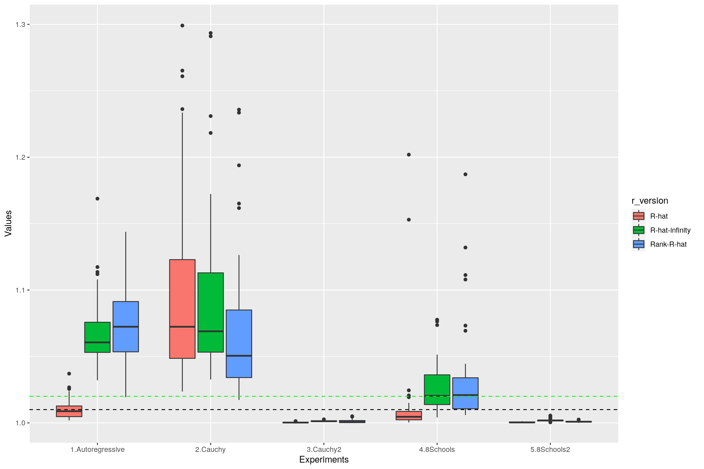